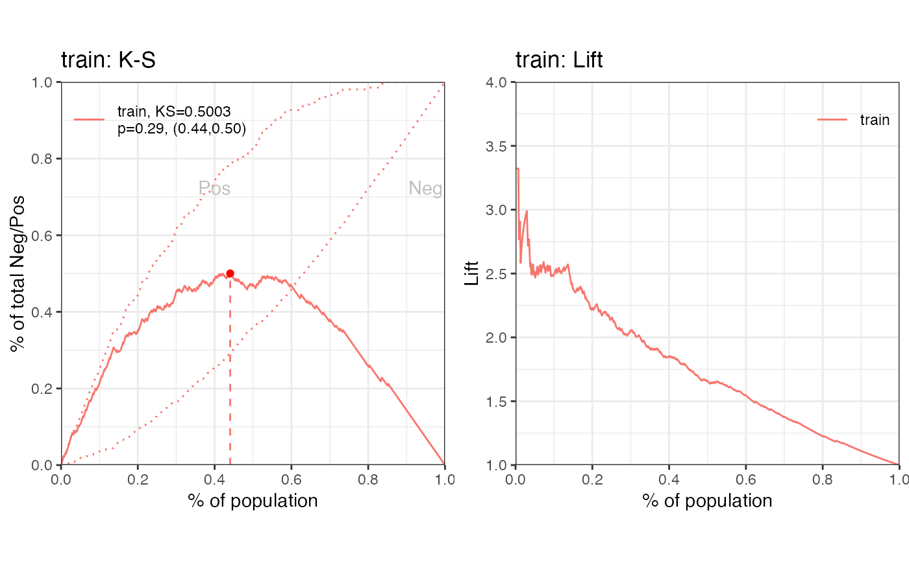
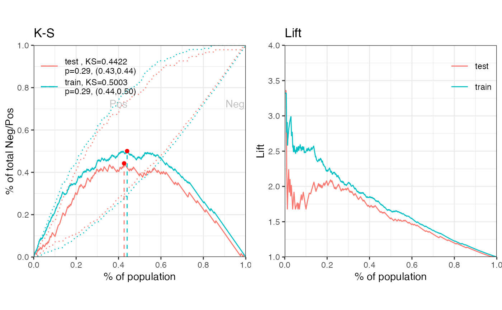

gains_table creates a data frame including distribution of total, negative, positive, positive rate and approval rate by score bins. It provides both equal width and equal frequency intervals on score binning.
gains_table(score, label, bin_num = 10, method = "freq", width_by = NULL,
breaks_by = NULL, positive = "bad|1", ...)A list of credit score for actual and expected data samples. For example, score = list(actual = scoreA, expect = scoreE).
A list of label value for actual and expected data samples. For example, label = list(actual = labelA, expect = labelE).
Integer, the number of score bins. Defaults to 10. If it is 'max', then individual scores are used as bins.
The score is binning by equal frequency or equal width. Accepted values are 'freq' and 'width'. Defaults to 'freq'.
Number, increment of the score breaks when method is set as 'width'. If it is provided the above parameter bin_num will not be used. Defaults to NULL.
The name of data set to create breakpoints. Defaults to the first data set. Or numeric values to set breakpoints manually.
Value of positive class, Defaults to "bad|1".
Additional parameters.
A data frame
# \donttest{
# data preparing ------
# load germancredit data
data("germancredit")
# filter variable via missing rate, iv, identical value rate
dt_f = var_filter(germancredit, "creditability")
#> [INFO] filtering variables ...
# breaking dt into train and test
dt_list = split_df(dt_f, "creditability")
label_list = lapply(dt_list, function(x) x$creditability)
# woe binning ------
bins = woebin(dt_list$train, "creditability")
#> [INFO] creating woe binning ...
# converting train and test into woe values
dt_woe_list = lapply(dt_list, function(x) woebin_ply(x, bins))
#> [INFO] converting into woe values ...
#> [INFO] converting into woe values ...
# glm ------
m1 = glm(creditability ~ ., family = binomial(), data = dt_woe_list$train)
# vif(m1, merge_coef = TRUE)
# Select a formula-based model by AIC
m_step = step(m1, direction="both", trace=FALSE)
m2 = eval(m_step$call)
# vif(m2, merge_coef = TRUE)
# predicted proability
pred_list = lapply(dt_woe_list, function(x) predict(m2, type = 'response', x))
# scorecard ------
card = scorecard(bins, m2)
# credit score, only_total_score = TRUE
score_list = lapply(dt_list, function(x) scorecard_ply(x, card))
# credit score, only_total_score = FALSE
score_list2 = lapply(dt_list, function(x) scorecard_ply(x, card, only_total_score=FALSE))
###### perf_eva examples ######
# Example I, one datset
## predicted p1
perf_eva(pred = pred_list$train, label=dt_list$train$creditability, title = 'train')

#> $binomial_metric
#> $binomial_metric$train
#> MSE RMSE LogLoss R2 KS AUC Gini
#> 1: 0.1519266 0.3897776 0.4578621 0.2779502 0.5003279 0.8267473 0.6534946
#>
#>
#> $pic
#> TableGrob (1 x 2) "arrange": 2 grobs
#> z cells name grob
#> 1 1 (1-1,1-1) arrange gtable[layout]
#> 2 2 (1-1,2-2) arrange gtable[layout]
#>
## predicted score
# perf_eva(pred = score_list$train, label=dt_list$train$creditability, title = 'train')
# Example II, multiple datsets
## predicted p1
perf_eva(pred = pred_list, label = label_list)

#> $binomial_metric
#> $binomial_metric$train
#> MSE RMSE LogLoss R2 KS AUC Gini
#> 1: 0.1519266 0.3897776 0.4578621 0.2779502 0.5003279 0.8267473 0.6534946
#>
#> $binomial_metric$test
#> MSE RMSE LogLoss R2 KS AUC Gini
#> 1: 0.1731937 0.4161655 0.522526 0.1717874 0.4421992 0.7714991 0.5429981
#>
#>
#> $pic
#> TableGrob (1 x 2) "arrange": 2 grobs
#> z cells name grob
#> 1 1 (1-1,1-1) arrange gtable[layout]
#> 2 2 (1-1,2-2) arrange gtable[layout]
#>
## predicted score
# perf_eva(score_list, label_list)
###### perf_psi examples ######
# Example I # only total psi
psi1 = perf_psi(score = score_list, label = label_list)
psi1$psi # psi data frame
#> variable dataset psi
#> 1: score train_test 0.03371411
psi1$pic # pic of score distribution
#> $score
#>
# Example II # both total and variable psi
psi2 = perf_psi(score = score_list2, label = label_list)
# psi2$psi # psi data frame
# psi2$pic # pic of score distribution
###### gains_table examples ######
# Example I, input score and label can be a list or a vector
g1 = gains_table(score = score_list$train, label = label_list$train)
g2 = gains_table(score = score_list, label = label_list)
# Example II, specify the bins number and type
g3 = gains_table(score = score_list, label = label_list, bin_num = 20)
g4 = gains_table(score = score_list, label = label_list, method = 'width')
# }